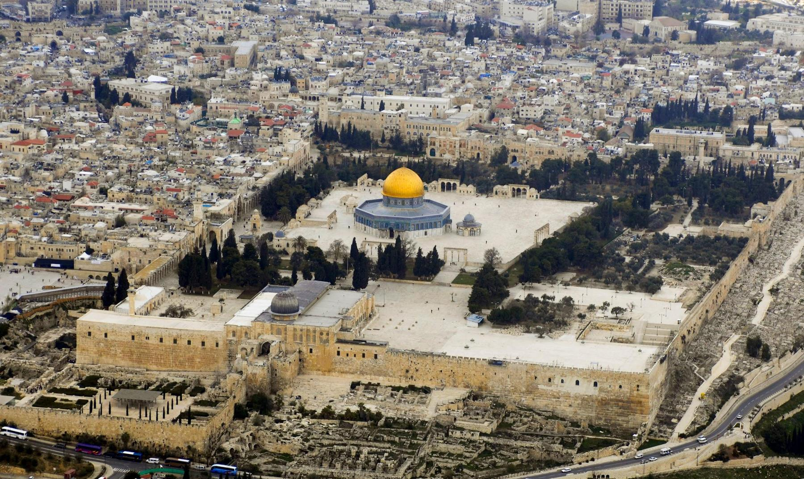
من عرض القدس الخاص بالتخصصمنطقة القدس · الموضوع 1
أهم مدينة سياحية في إسرائيل: تقع على سلسلة جبلية بارتفاع 800 متر، بين الشفيلا والصحراء، وهي مقدّسة لثلاث ديانات. تقريبًا ثلاثة من كل أربعة سياح يصلون إلى إسرائيل يزورونها أيضًا. في هذا الموضوع سنفهم لماذا.
بطاقة هوية
القدس عاصمة إسرائيل وأكبر مدنها، ومركز لكل قطاعات السياحة: الحجّ، التاريخ والآثار، الثقافة، الذكرى والتخليد، والسياحة الحضرية (תיירות עירונית).
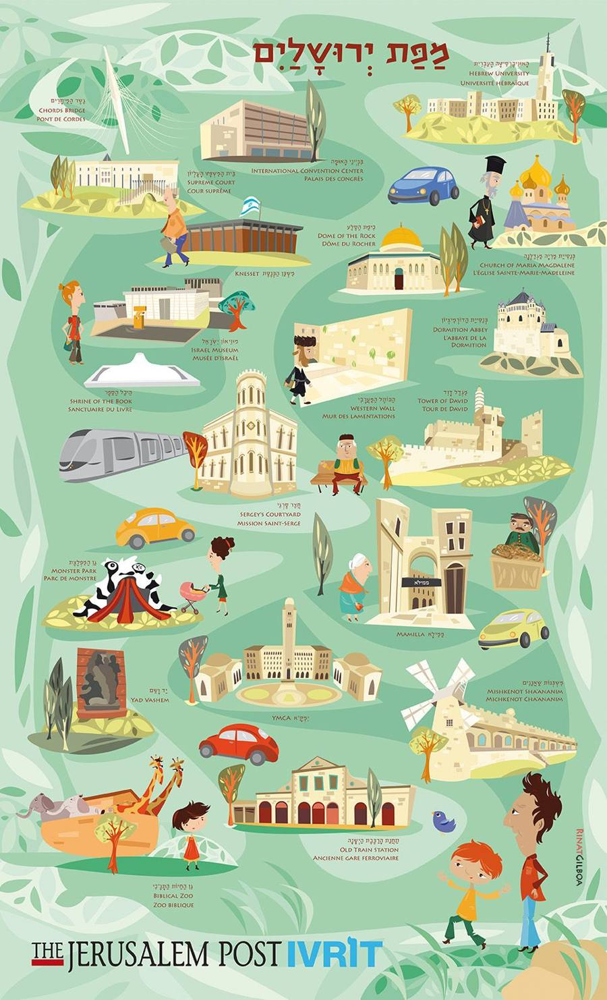
من أسماء المدينة: صهيون، شاليم، يبوس، مدينة داود، "يِفيه نوف" (جميلة المنظر) وأريئيل. تعدّد الأسماء يعكس مكانتها المركزية في الثقافة اليهودية، وقد كُتبت عنها في الشعر العبري مئات القصائد، مثل "أورشليم من ذهب" لنعومي شيمر.
بنى سور البلدة القديمة السلطان العثماني سليمان القانوني قبل نحو 500 سنة. أحد الأبواب، باب الرحمة، مغلق، وبحسب التقليد اليهودي سيُفتح عند مجيء المسيح.
معطى 74%: تقرير مراقب الدولة عن القدس (2019)، بحسب معطيات 2017. إعلان اليونسكو غير مذكور في الكتاب.
الموقع
منطقة القدس منطقة جبلية: جبال يهودا، وفي وسطها جبال القدس التي يصل ارتفاعها إلى نحو 800 متر.
تقع القدس على بُعد نحو 60 كم من البحر المتوسط. قربها من مناطق مختلفة جدًا، الجبل والشفيلا والصحراء، يجعلها قاعدة مبيت للرحلات في المنطقة كلها.
الخريطة: خط الساحل بحسب معطيات Natural Earth. البلدات في مواقعها الحقيقية. أشرطة المشهد الطبيعي مرسومة بشكل تقريبي.
لماذا هنا بالذات
صحراء في ظلّ المطر. تصل غيوم المطر من البحر المتوسط وتُسقط معظم أمطارها على المنحدر الغربي للجبل. عندما يهبط الهواء شرقًا يسخن ويجفّ، ولذلك تبدأ صحراء يهودا شرقي المدينة مباشرة.
ماذا يعني ذلك للسياحة؟ من نقاط المشاهدة في المدينة تُرى الصحراء، وخلال دقائق من السفر تنتقل من مشهد أخضر إلى مشهد صحراوي.
لماذا قامت المدينة هنا؟ على قمة سلسلة الجبال يمرّ الطريق القديم من الشمال إلى الجنوب، ومن هنا تنزل طرق غربًا إلى البحر وشرقًا إلى أريحا. قرب المدينة القديمة نبع جيحون، والجبل المرتفع كان سهل الدفاع.
الارتفاعات والمسافات تقريبية. المقطع تخطيطي.
تقع القدس على خط تقسيم المياه: مياه الأمطار التي تهطل غربي المدينة تجري نحو البحر المتوسط، وما يهطل شرقيها يجري شرقًا نحو الغور (الشقّ السوري الإفريقي). على امتداد السلسلة يمرّ اليوم شارع 60، الذي يُسمّى "طريق الآباء"، لأنه بحسب التقليد سار فيه آباء الأمة. وعلى امتداده تقع الخليل وبيت لحم والقدس.إثراء، ليس من الكتاب
يهطل في القدس بالمعدّل نحو 550 ملم من المطر في السنة، وعلى مسافة قصيرة شرقيها تنخفض الكمية بشكل حادّ.إثراء، ليس من الكتاب
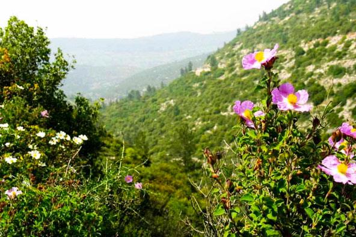
المشهد الطبيعي
حجر القدس. الحجر الجيري هو أيضًا حجر البناء في المدينة. في عام 1918 قرّر الحاكم البريطاني رونالد ستورز أن يُكسى كل مبنى في القدس بالحجر. لذلك تبدو المدينة كلها بلون واحد، وهذا جزء من هويتها كهدف سياحي.إثراء، ليس من الكتاب
مصاطب وينابيع. على منحدرات الجبال بنى المزارعون عبر الأجيال مصاطب (سلاسل) زراعية، وبين الجبال تتفجّر ينابيع. وقد أصبح كلاهما مركزًا شائعًا للرحلات في جبال القدس.إثراء، ليس من الكتاب
محمية طبيعية (שמורת טבע): منطقة محميّة أُعلنت للحفاظ على الحيوانات والنباتات فيها.
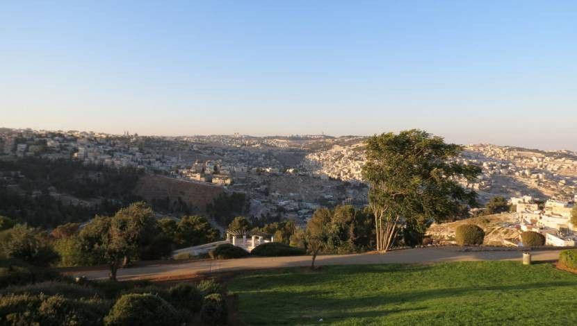
المناخ والفصول
| الفصل | الطقس | ماذا يعني ذلك للسائح |
|---|---|---|
| الشتاء | بارد وماطر، وأحيانًا ثلج | الثلج في المدينة يجذب زوّارًا من كل البلاد. عيد الميلاد يجلب الحجاج إلى بيت لحم. |
| الربيع والخريف | لطيف | الفصلان الأنسب للجولات سيرًا على الأقدام. عيد الفصح اليهودي وعيد الفصح المسيحي وعيد العُرُش هي مواسم الذروة. |
| الصيف | حارّ وجافّ، وأمسيات منعشة | جولات في الصباح والمساء، مهرجانات وعروض في أمسيات الصيف. |
المناخ غير مذكور في كتاب التعليم. هذه الشريحة إثراء.
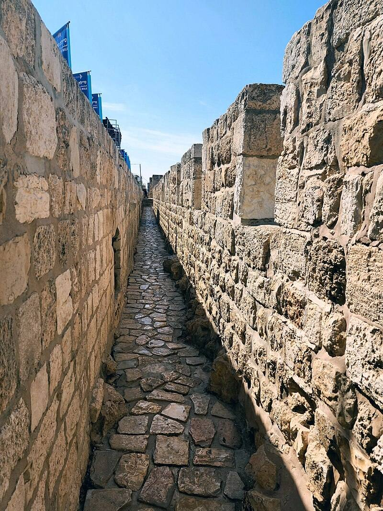
محطة تمرين · الإجابة في الاستوديو
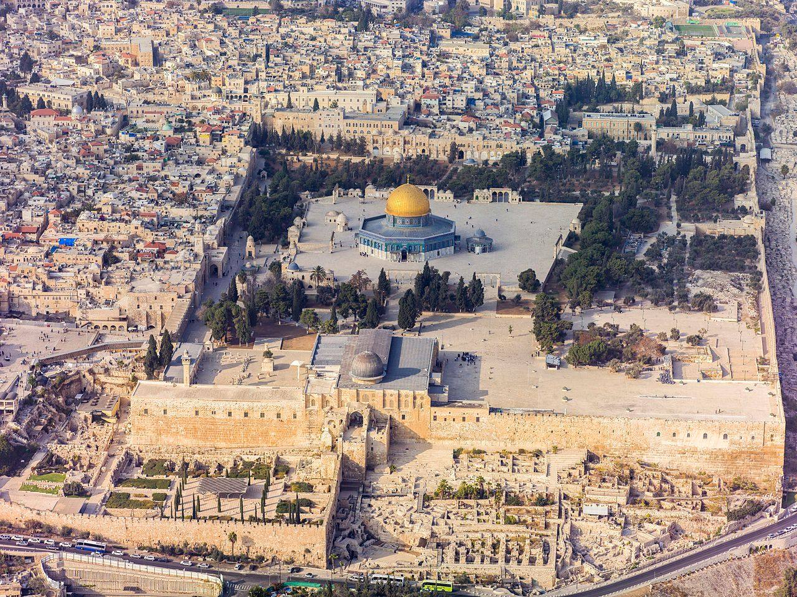
من عرض القدس الخاص بالتخصصلماذا يأتون
القدس مقدّسة لليهودية والمسيحية والإسلام، وهي لكل واحدة منها مكان لا بديل له. في الشرائح الثلاث القادمة سنتعرّف على ما هو مقدّس لكل ديانة، وعلى ما يفعله الحاجّ من كل ديانة في المدينة.
الديانات الثلاث · اليهودية
على جبل الهيكل، جبل الموريا، قام الهيكل الأول والثاني. وبحسب التقليد، هناك جرت قصة ربط إسحاق (العقيدة)، وهناك عُقد العهد بين الله وإبراهيم. يصلّي اليهود في كل العالم باتجاه القدس.
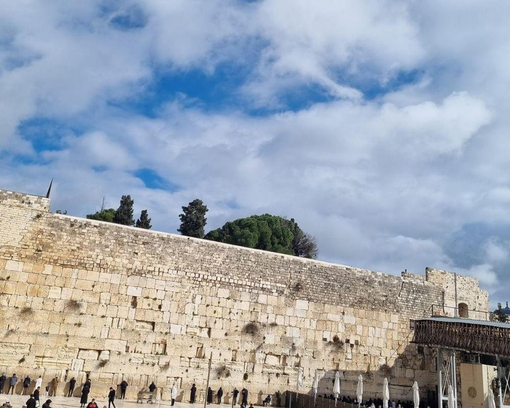
الصلاة عند الحائط، احتفالات بار متسفا وبات متسفا (بلوغ سنّ الفرائض)، بركة الكهنة الجماعية عند الحائط في أيام الوسط من عيد الفصح اليهودي وعيد العُرُش، وزيارة مواقع تروي التاريخ اليهودي: الحي اليهودي، أنفاق الحائط الغربي ومدينة داود.
في بجروت 2019 طُلب من الطلاب تخطيط جولة ليومين لعائلة يهودية من خارج البلاد جاءت للاحتفال بـ"بار متسفا" عند الحائط. سنعود إلى هذا السؤال في نهاية الموضوع.
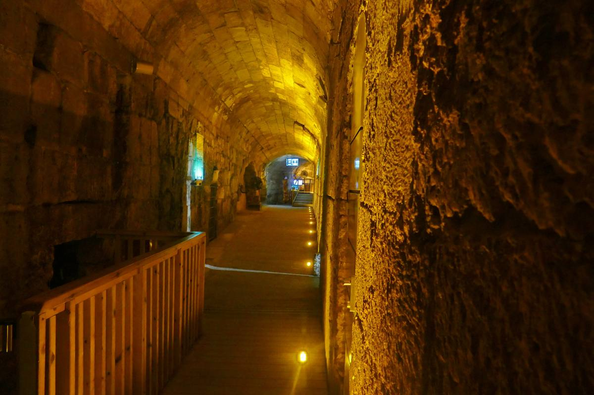
امتداد الحائط تحت بيوت الحي الإسلامي.
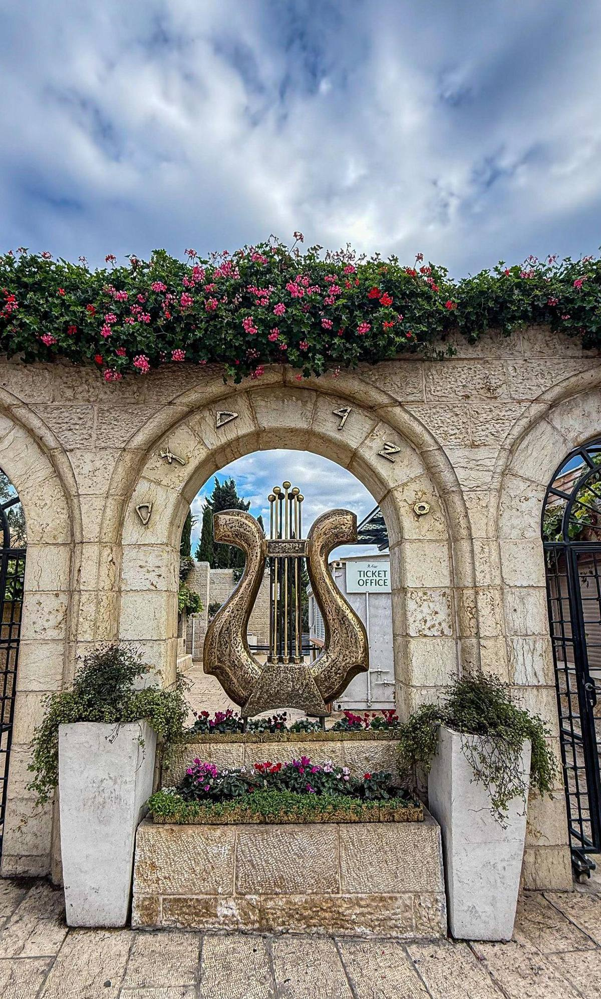
القدس القديمة ونفق حزقيا.
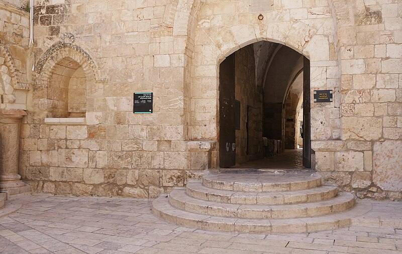
بحسب التقليد، على جبل صهيون.
الصور: عرض الصور الرسمي.
الديانات الثلاث · المسيحية
بحسب الإيمان المسيحي، في القدس تناول يسوع العشاء الأخير، واعتُقل، وحوكم، وصُلب، ودُفن، وقام من بين الأموات وصعد إلى السماء. لذلك يرمز كل موقع مسيحي تقريبًا في المدينة إلى أحد هذه الأحداث.
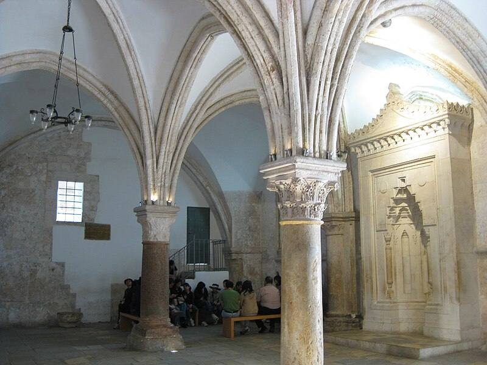
جبل صهيونهنا تناول يسوع وتلاميذه عشاء الفصح.
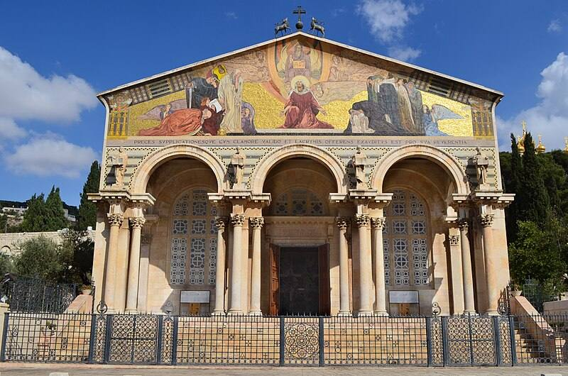
جبل الزيتونكنيسة جميع الأمم، في البستان الذي صلّى فيه يسوع قبل اعتقاله.
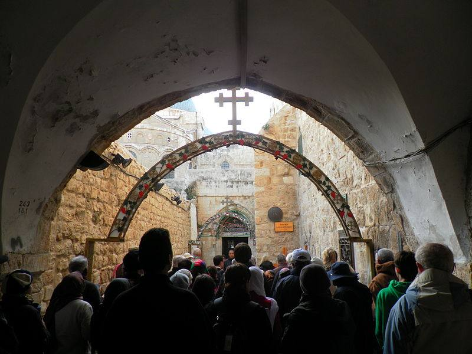
الحي المسيحي14 محطة في الطريق إلى الصلب. الخمس الأخيرة داخل كنيسة القيامة.
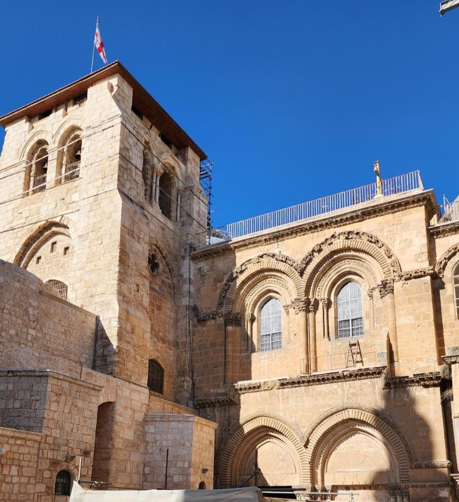
الحي المسيحيمكان الصلب والدفن والقيامة. ذروة زيارة الحاجّ.
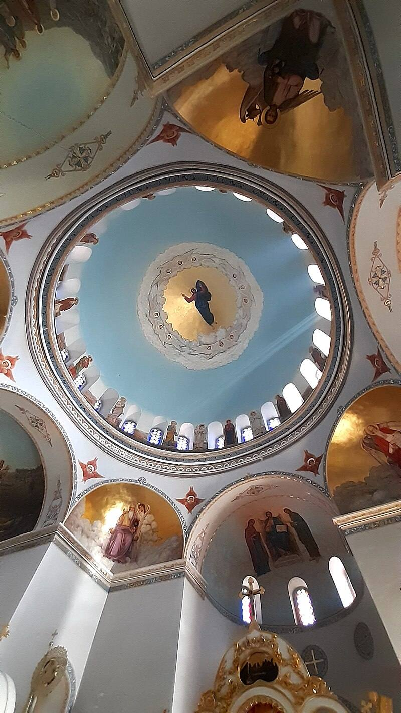
جبل الزيتونالمكان الذي صعد منه يسوع إلى السماء.
الصور: عرض الصور الرسمي (بيكيويكي، مواقع تراث ويكيبيديا).
الديانات الثلاث · الطوائف المسيحية
| الطائفة | من هم | ما المهمّ لهم في القدس |
|---|---|---|
| الكاثوليك | بقيادة البابا في روما | طريق الآلام، كنيسة القيامة، الكنائس على جبل الزيتون. الفرنسيسكان يحرسون الأماكن المقدّسة باسم الكنيسة. |
| الأرثوذكس | المسيحية الشرقية: يونان، روس وغيرهم | كنيسة القيامة واحتفال "النار المقدّسة" (سبت النور) في السبت الذي يسبق الفصح. كنيسة مريم المجدلية الروسية. |
| البروتستانت | طوائف الإصلاح الديني، تشدّد على دراسة الكتاب المقدّس | بستان القبر، خارج الأسوار. مواقع بسيطة، بلا طقوس حولها. |
| الأرمن | أول شعب اعتمد المسيحية دينًا رسميًا | الحي الأرمني وكاتدرائية القديس يعقوب. |
| الأحباش | الكنيسة الإثيوبية | دير على سطح كنيسة القيامة. |
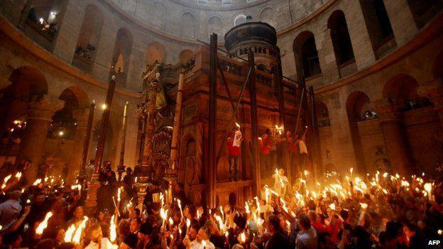
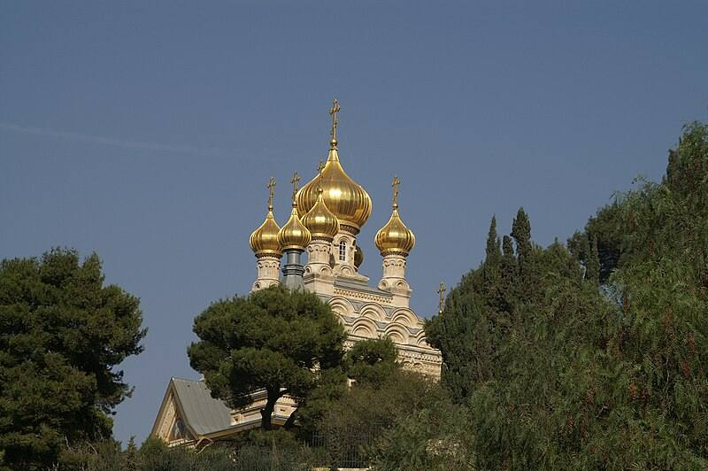
كنيسة القيامة مقسّمة بين عدّة كنائس: الروم الأرثوذكس والكاثوليك والأرمن يملكون معظم المساحة، وللأقباط والأحباش والسريان أجزاء صغيرة. يُحافَظ على هذا التقسيم بترتيب قديم يُسمّى "الوضع القائم" (الستاتيكو). مفتاح الكنيسة بيد عائلة مسلمة، كي لا تسيطر أي كنيسة على الباب.إثراء، ليس من الكتاب
يحتفل الكاثوليك بعيد الميلاد في 25 كانون الأول، والأرثوذكس في بداية كانون الثاني. لذلك يستمرّ موسم الحجّ إلى بيت لحم عدّة أسابيع.إثراء، ليس من الكتاب
سؤال يتكرّر في البجروت
داخل البلدة القديمة، في الحي المسيحي. هنا، بحسب معظم التقاليد المسيحية، كانت تلّة الجلجلة التي صُلب عليها يسوع، وهنا دُفن وقام.
يؤمن بها: الكاثوليك والأرثوذكس، وتقريبًا كل الطوائف القديمة.
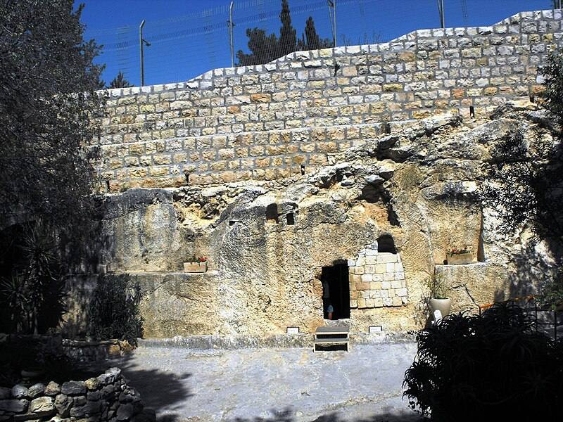
خارج الأسوار، شمالي باب العامود. مغارة دفن قديمة في بستان هادئ، قرب صخرة يذكّر شكلها بجمجمة. حُدّد كقبر يسوع في القرن الـ19.
يؤمن به: قسم من البروتستانت.
في بجروت 2023 سُئل الطلاب: "اذكروا الموقعين اللذين يُعتبران مكان دفن يسوع، وأي طائفة تؤمن بكل واحد منهما".
الديانات الثلاث · الإسلام
بحسب العقيدة الإسلامية، أُسري بالنبي محمد في ليلة واحدة من مكة إلى القدس، ومن الحرم الشريف عُرج به إلى السماء، وهناك فُرضت عليه الصلاة. لذلك فإن الحرم الشريف (جبل الهيكل) هو ثالث أقدس مكان في الإسلام، بعد مكة والمدينة.
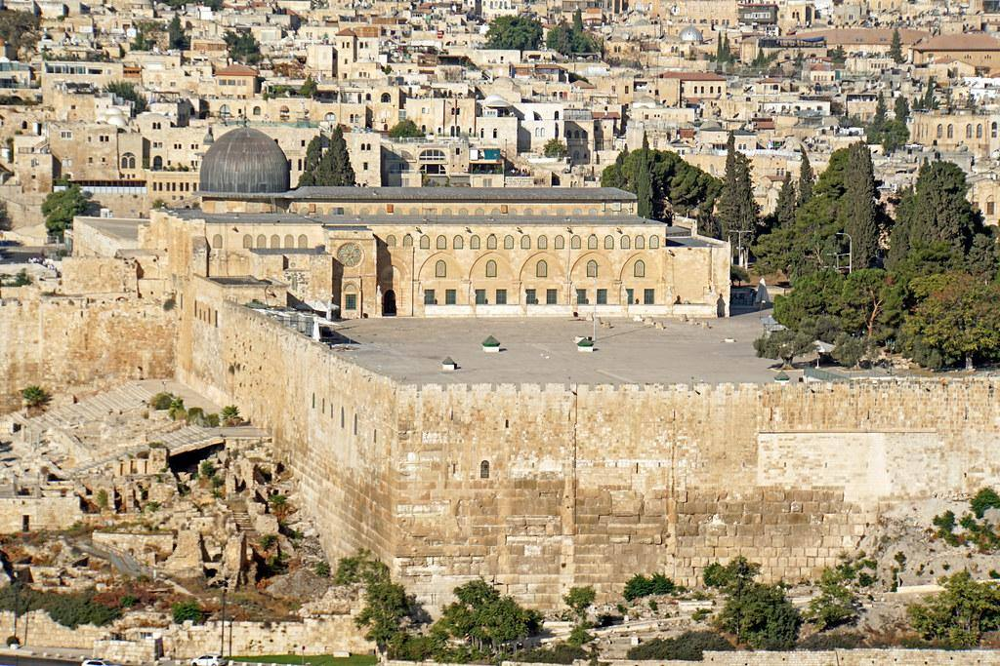
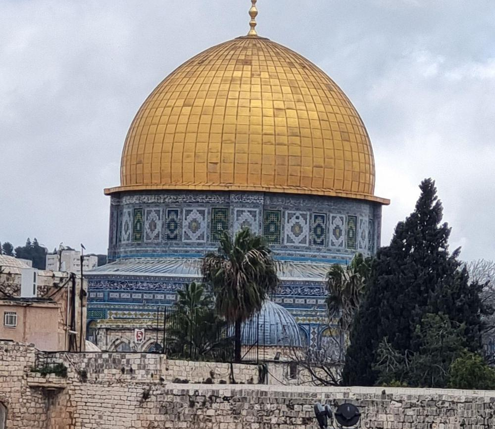
في أيام الجمعة، وخاصة في شهر رمضان، يصل إلى الحرم الشريف عدد كبير جدًا من المصلّين. الدخول إلى قبة الصخرة مسموح للمسلمين فقط. يزور اليهود والسياح الساحة في ساعات محدّدة، وصلاة اليهود في المكان ممنوعة.
جبل الهيكل / الحرم الشريف موقع حسّاس جدًا من الناحية الدينية والسياسية، والأحداث فيه تؤثّر على السياحة في المدينة كلها.
محيط القدس
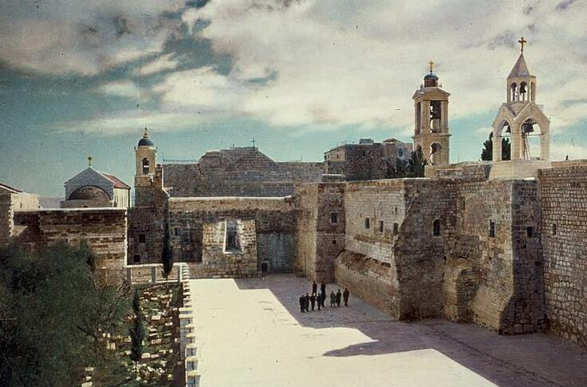
بيت لحم · المسيحيةبُنيت فوق المغارة التي وُلد فيها يسوع بحسب التقليد. من أقدم الكنائس في العالم، وموقع تراث عالمي. في عيد الميلاد تمتلئ المدينة بالحجاج.
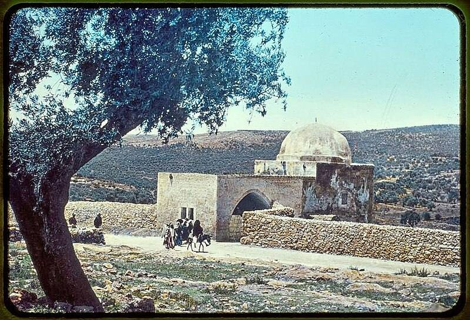
مدخل بيت لحم · اليهوديةقبر راحيل الأمّ. مكان صلاة، خاصة للنساء، اللواتي يأتين للدعاء من أجل الإنجاب ومن أجل أولادهنّ.
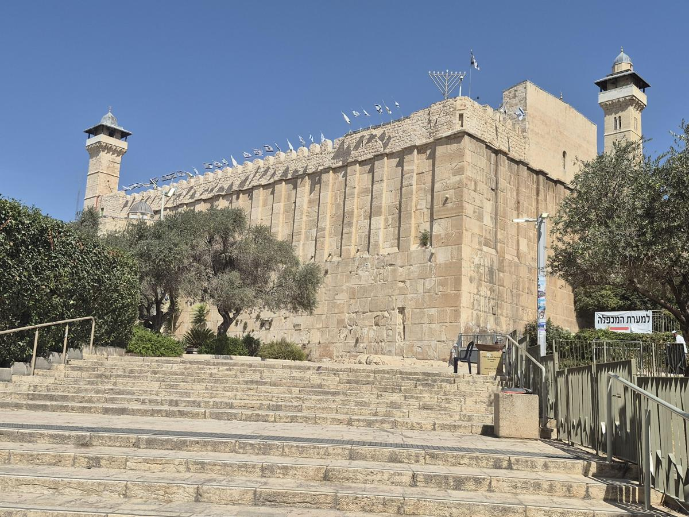
الخليل · اليهودية والإسلامقبور إبراهيم وإسحاق ويعقوب، وسارة ورفقة وليئة. مقدّسة لليهود والمسلمين، ولذلك هي مقسّمة بينهم.
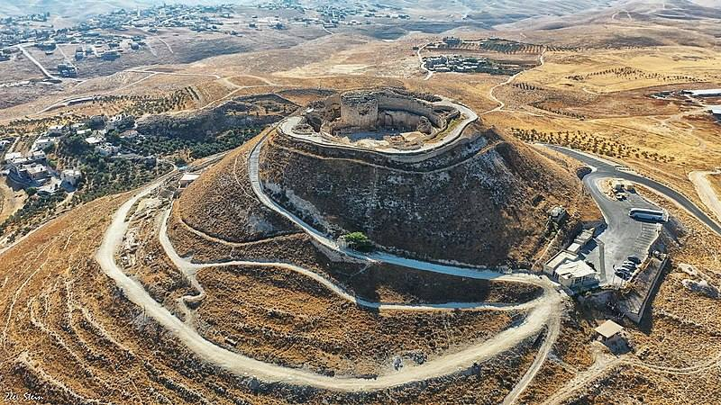
قرب بيت لحم · تاريخجبل بناه هيرودس، وعليه قصر وقلعة. وهناك أيضًا دُفن، بحسب الأبحاث.
متروبولين (מטרופולין): مدينة أمّ تحيط بها بلدات تتلقّى منها خدمات التعليم والعمل والثقافة والصحة.
يشمل متروبولين القدس ضواحي مثل معاليه أدوميم ومفسيرت تسيون وبيت شيمش، وكذلك موشافات وكيبوتسات. في بعض الكيبوتسات في جبال القدس فنادق وضيافة ريفية. بيت لحم والخليل تقعان في مناطق السلطة الفلسطينية، ويصل السياح إليهما أيضًا.
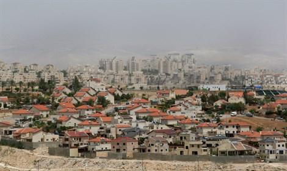
قرية أبو غوش المسلمة، غربي القدس على الطريق التاريخي من يافا، مثال على بلدة فيها مواقع مقدّسة لعدّة ديانات: كنيسة البعث (القيامة) الصليبية من القرن الـ12، وكنيسة نوتردام على التلّة التي استقرّ عليها تابوت العهد في قرية يعاريم، بحسب التوراة. وفي القرية أيضًا مطاعم حمّص مشهورة ومهرجان للموسيقى الصوتية.
في بجروت 2024 طُلب من الطلاب ذكر "بلدة في محيط القدس فيها موقع مقدّس لعدّة ديانات". في مفتاح الإجابات الرسمي: الخليل ومغارة المكفيلا. أبو غوش أيضًا مثال جيّد.
الصور: عرض الصور الرسمي. المكفيلا: تصوير رافيت شتاينبرغ.
محطة تمرين · الإجابة في الاستوديو
معطيات سياحية
نحو 2.7 مليون من أصل نحو 3.6 مليون. أعلى نسبة بين السياح المسيحيين.
النسبة من مجمل السياح إلى إسرائيل، 2016
السائح اليهودي يزور أيضًا كنيسة القيامة، والسائح المسيحي يزور أيضًا حائط المبكى. المواقع الكبيرة تجذب الجميع تقريبًا.
المصدر: تقرير مراقب الدولة عن القدس (2019)، فصل السياحة.
أنواع السياحة
| نوع السياحة | أمثلة في القدس ومحيطها |
|---|---|
| الحجّ اليهودي | حائط المبكى، قبر داود، مغارة المكفيلا، قبر راحيل |
| الحجّ المسيحي | كنيسة القيامة، طريق الآلام، جتسماني، عين كارم، بيت لحم |
| الحجّ الإسلامي | الحرم الشريف: المسجد الأقصى وقبة الصخرة |
| التاريخ والآثار | مدينة داود، أنفاق الحائط الغربي، الكاردو، البيت المحروق، هيروديون |
| الثقافة والتراث | متحف إسرائيل، متحف أراضي الكتاب المقدّس، بيت عجنون، أحياء مثل مئة شعاريم ويمين موشيه |
| سياحة حضرية وترفيه | سوق محانيه يهودا، شارع المشاة بن يهودا، نحلات شيفع، الحي الألماني، مجمّع المحطة الأولى |
| الذكرى والتخليد | ياد فاشيم، جبل هرتسل، تلّة الذخيرة |
| الطبيعة والمشهد | جبل الزيتون، جبل المشارف، منتزه أرمون هنتسيف، نُصب كينيدي، محميات في جبال القدس |
عاصمة
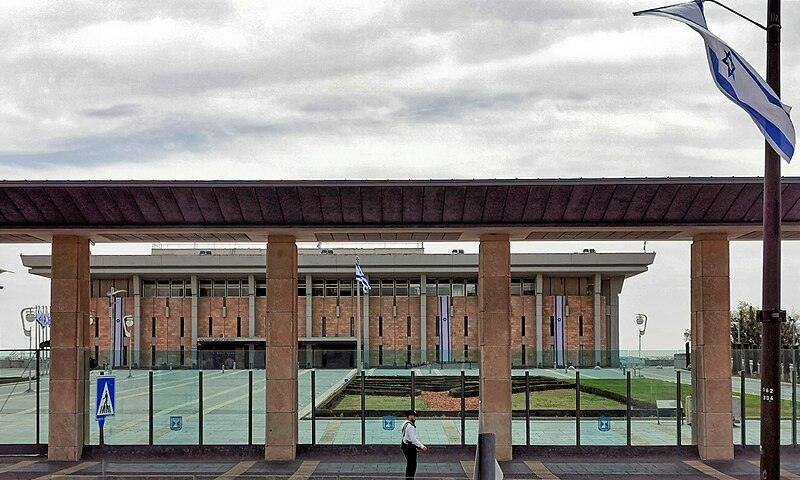
جفعات رام · 1966السلطة التشريعية. زيارة بتنسيق مسبق يومي الأحد والخميس، وفيها أعمال لشاغال.
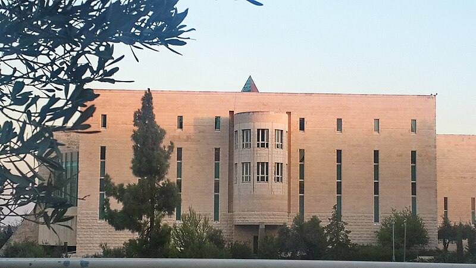
جفعات رام · 1992عمارة تدمج القديم بالجديد. جولات مرشدة بالتنسيق.
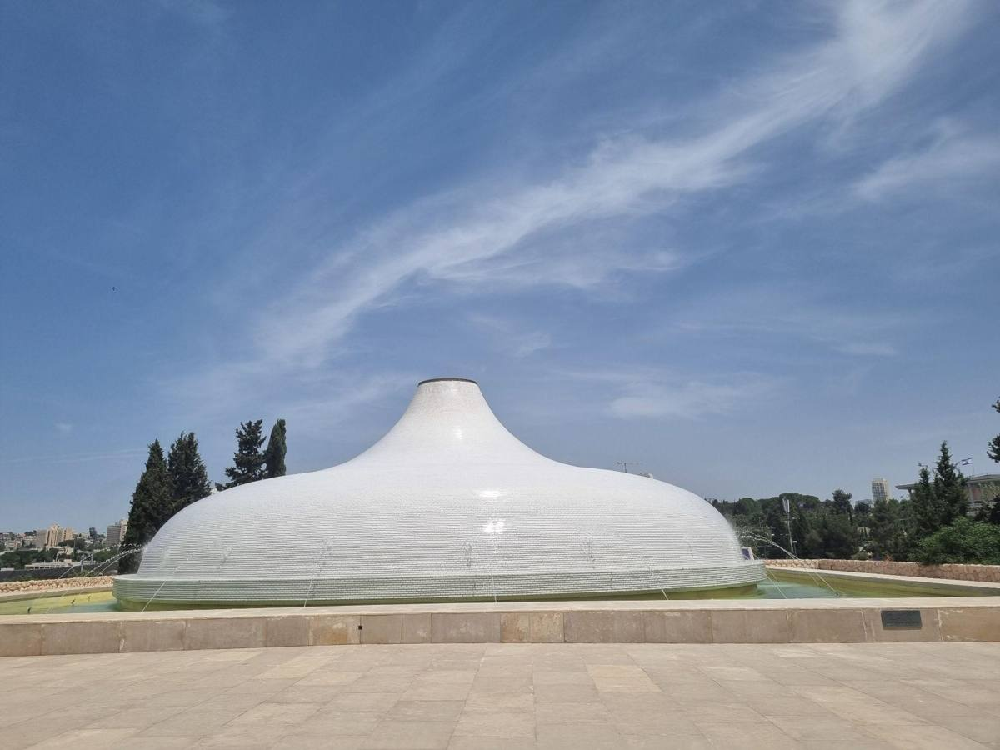
جفعات رامالمتحف الوطني. في "مقام الكتاب" مخطوطات قمران، وفي الخارج نموذج القدس أيام الهيكل الثاني.
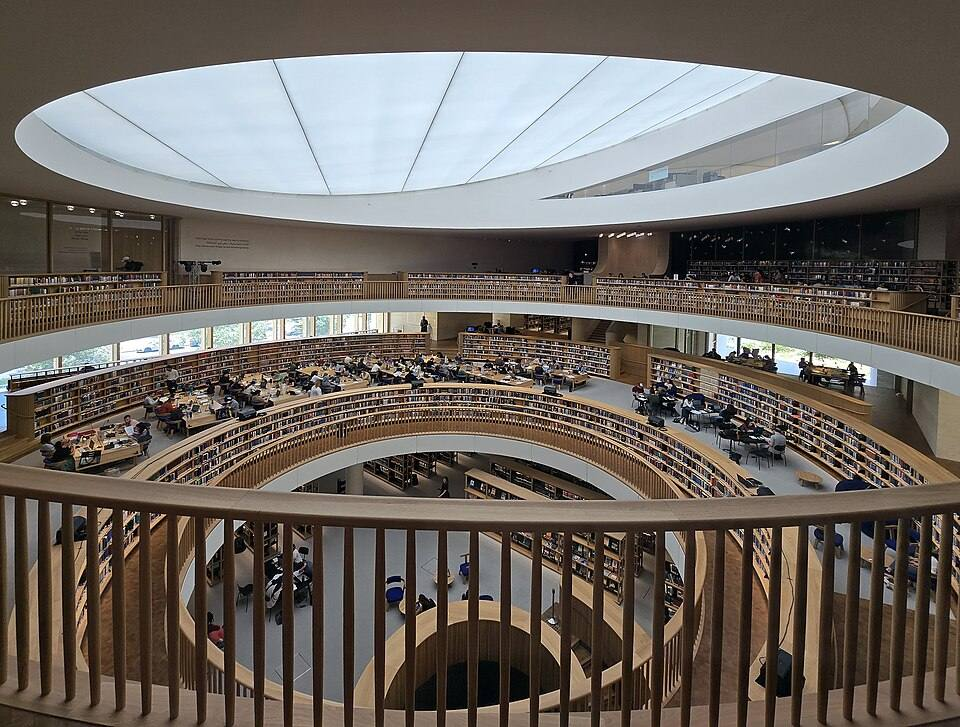
جفعات رامكنوز مطبوعات الدولة والشعب اليهودي، في مبنى جديد يمكن التجوّل فيه.
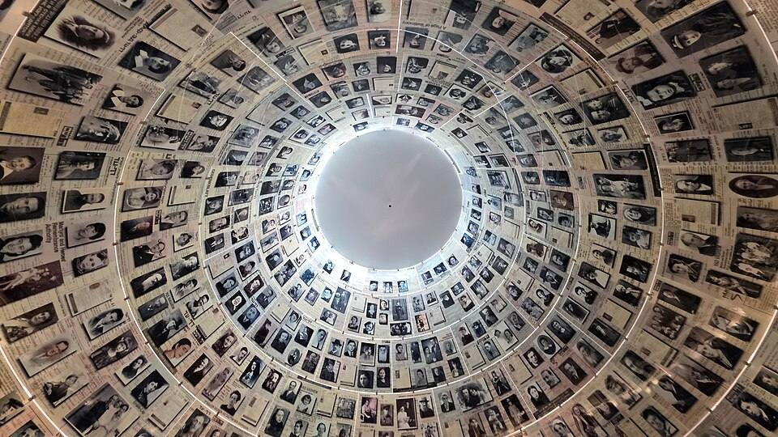
جبل الذكرىمتحف الكارثة (الهولوكوست). يزوره كل ضيف رسمي للدولة.
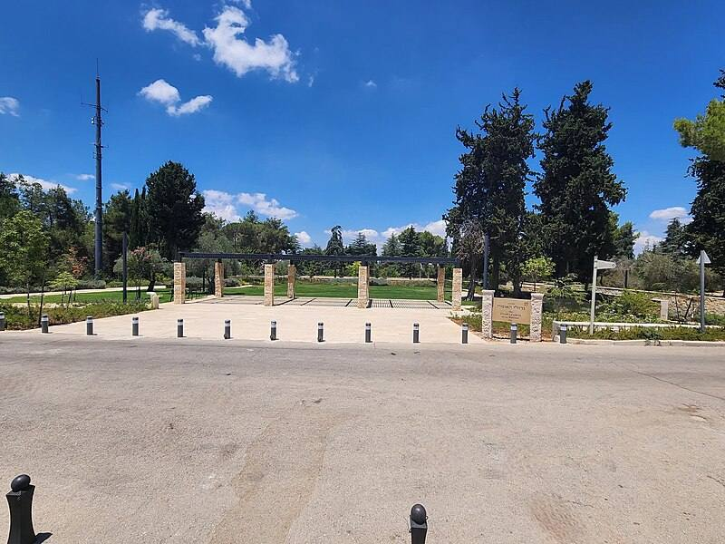
830 مالمقبرة الوطنية: قبر هرتسل وعظماء الأمة، ومنذ 2017 قاعة ذكرى قتلى حروب إسرائيل.
بحسب مفتاح الإجابات لبجروت 2026: الزيارة تعرّف الزوّار على التاريخ اليهودي وعلى إبادة الشعب اليهودي في الكارثة، وفي الوقت نفسه على الدولة المزدهرة التي بُنيت بعدها. وهي تخلق تماهيًا مع إسرائيل كبيت للشعب اليهودي.
الصور: عرض الصور الرسمي. الأوصاف ملخّصة من مفاتيح الإجابات الرسمية لعام 2026.
سياحة حضرية وترفيه
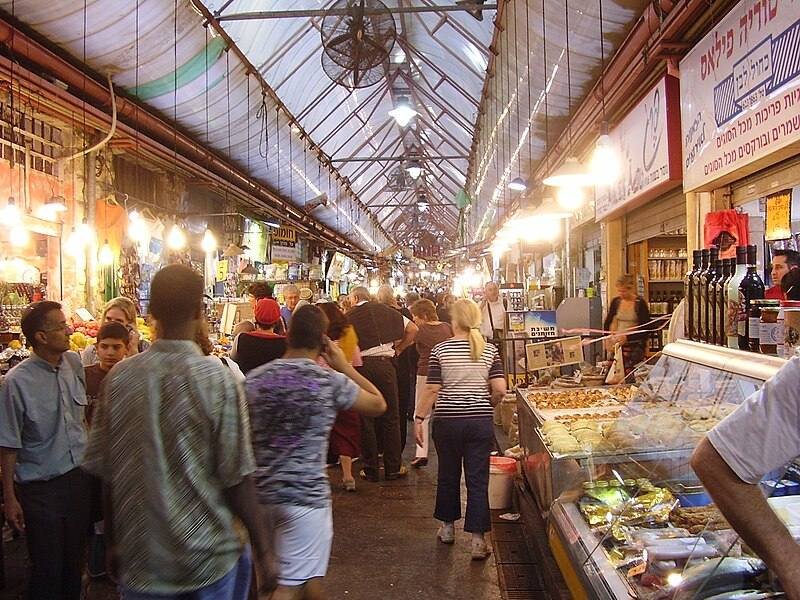
سوق طعام نابض بالحياة في النهار، وفي المساء مطاعم وحانات وفنّ شارع.
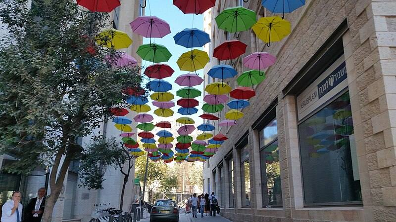
الحي الثالث الذي بُني خارج الأسوار. رُمّم وأصبح مركزًا للسهر الليلي.
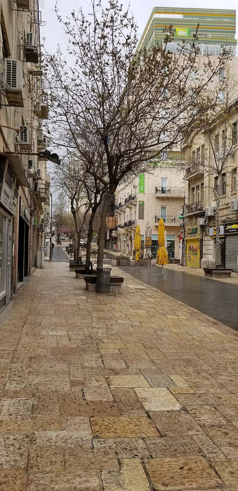
ممشى في مركز المدينة فيه مطاعم ومقاهٍ ومحلات.
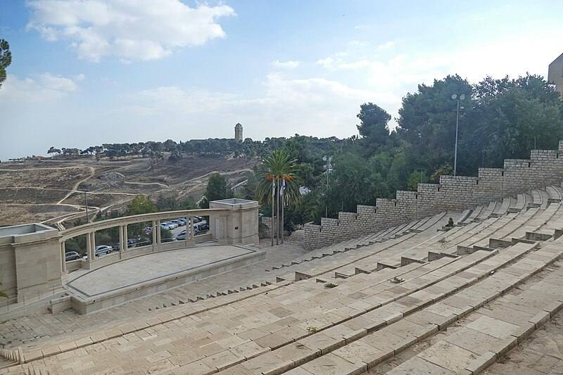
جبل المشارف وجبل الزيتون ومنتزه أرمون هنتسيف تُطلّ على البلدة القديمة وعلى صحراء يهودا.
سؤال يتكرّر في البجروت (2024): موقع متحف، موقع للسهر الليلي، موقع للأطفال الصغار، وموقع هو رمز للسلطة. للأطفال الصغار تُقبل الإجابات: حديقة الحيوانات التوراتية، متحف العلوم وأكواريوم إسرائيل.
نقاط مشاهدة
بجروت 2021: "من أي المواقع نُطلّ على البلدة القديمة؟" بحسب خريطة. يُستحسن تذكّر اتجاه كل نقطة مشاهدة أيضًا.
عوامل مؤثّرة على السياحة
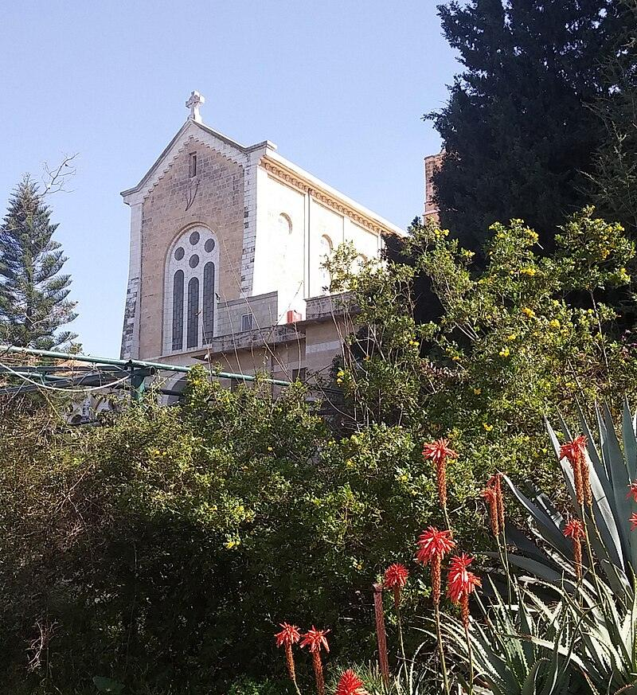
الوصول والمبيت
فندق الملك داود: فندق فاخر من أيام الانتداب، وهو اليوم دار الضيافة الرسمية للدولة لكبار الضيوف.
مجموعة أم سائح مستقلّ: مجموعات الحجاج تبيت عادةً في فنادق كبيرة وتصل بالحافلة. السياح المستقلّون يختارون غالبًا فندق بوتيك أو شقة، ويتجوّلون مشيًا وبالقطار الخفيف.
تحدّيات
في تقرير نشره عام 2019 وجد مراقب الدولة عدّة مشاكل تتكرّر:
المصدر: تقرير مراقب الدولة عن القدس (2019)، فصل السياحة.
جماهير الهدف
مهارة بجروت
مثال: مجموعة "تجليت" (شباب يهود من الخارج) تأتي ليومين إلى القدس لتتعرّف على الهوية اليهودية وإسرائيل اليوم. خطّطوا جولة من خمسة مواقع.
| اليوم | الموقع | الوقت | لماذا |
|---|---|---|---|
| اليوم 1 | حائط المبكى | ساعة ونصف | أقدس مكان لليهود، تجربة هوية |
| الحي اليهودي والكاردو | ساعتان | قريب من الحائط، القدس اليهودية عبر العصور | |
| سوق محانيه يهودا | ساعة ونصف مساءً | طعام وأجواء القدس اليوم | |
| اليوم 2 | ياد فاشيم | 3 ساعات | الكارثة، وأهمية البيت للشعب اليهودي |
| جبل هرتسل | ساعة ونصف | قرب ياد فاشيم: صاحب رؤية الدولة وقادتها |
حلّ نموذجي. المواقع نفسها سنتعلّمها في المواضيع القادمة.
محطة تمرين · الإجابة في الاستوديو
مصطلحات للبجروت
الأرقام والتعريفات بحسب قائمة "مصطلحات للبجروت 2026".
محطة تمرين · الإجابة في الاستوديو
أسئلة ختامية · الإجابة في الاستوديو
أجيبوا عن الأسئلة الثلاثة. في الامتحان نفسه تختارون أحيانًا جزءًا من البنود، فاقرأوا التعليمات جيدًا.
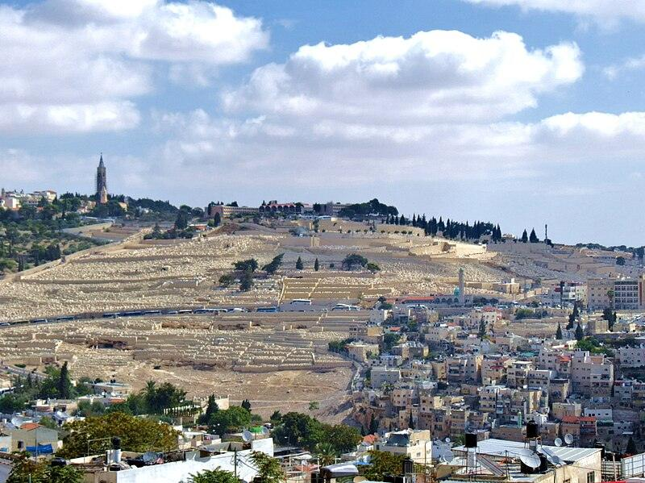
جبل الزيتون · عرض الصور الرسميتلخيص
في الموضوع القادم: الخطّ الزمني للقدس، من المدينة اليبوسية حتى 1967.